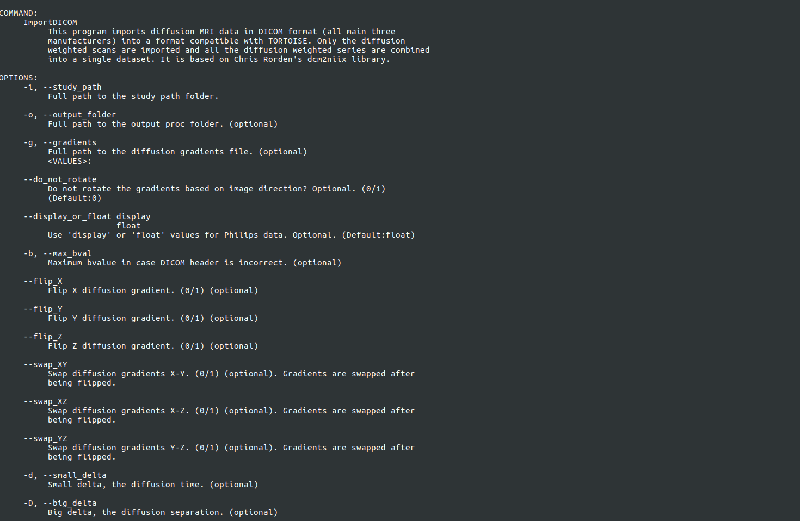
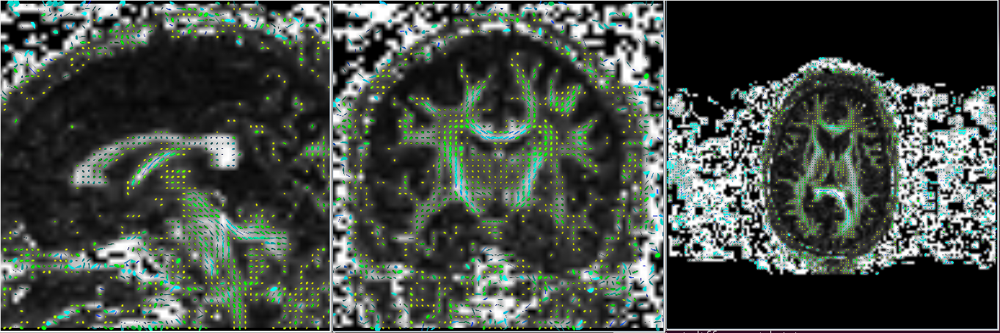
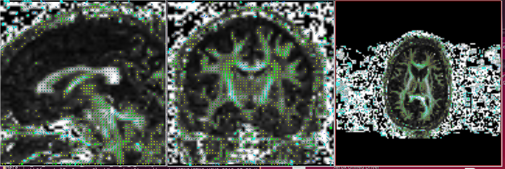

3. STEP1:IMPORT DATA¶

Some helpful tips before importing data:
- Please make sure that the folder to be imported contains only diffusion data. If you are not sure, please convert the dicoms to nifti using the mricron dcm2nii tool. This should convert diffusion files into nii with associated bvals and bvecs. If structural was present in the same folder, it would not have an associated bvals and bvecs file.
- It is advised to open your nii file and look at the data in any visualization software, that can read in a nii file, to make sure the data has the expected number of volumes.
- Once you import the data, please make sure you check your data before processing, to make sure the gradient information has been correctly recorded. The reliable way to check the gradient information is to check the line fields or the non symmetric heurestic color map (tool included). The import tool relies on information present in the header file and if it is incorrect it will be translated into your data and processing. So this checking, especially for new studies, is highly recommended.
- The new import tools is capable of reading direction information from the header. Although, if your data contains intermediate b values (for ex: 200, 500, 1000) then please provide a gradient text file that is scaled to the maximum bvalue.The gradient text file will have tab separated three columns, with the same number of rows as the total volumes in the data to be imported. The top row will have the number of rows in the text file listed.
3.1. TORTOISE Version 3.1- Import¶
Please remember, if you use this version, all the following steps in DIFFPREP and DRBUDDI should be performed with the executables from this version.
Note
All the executables can be accessed from the ./TORTOISE31/DIFFPREP31/bin/bin folder if this has not been added to your path variable.
3.2. ImportDICOM¶
Type in the command line the following to see the following help file in the terminal ./ImportDICOM
3.3. Import PARREC¶
Type in the command line the following to see the following help file in the terminal ./ImportPARREC, if your philips data has been saved in PAR REC format.
3.4. Import Bruker¶
Type in the command line the following to see the following help file in the terminal ./ImportBruker to show the help file to run this import.
3.5. CHECK YOUR IMPORT RESULTS¶
Check your import results using the following tools. The outputs from running the following executables will be in the _proc folder to be viewed using any visualization software that supports the viewing of RGB format files. You will find the following executable in the ./TORTOISE31/DIFFCALC31/bin folder:
Linear fitting should be performed to output a DT.nii
Usage: EstimateTensorWLLS full_path_to_listfile full_path_to_mask_file (optional) dti_bval_cutoff (optional. all volumes will be used)
- Non symmetric heuristic maps You can check the non symm heuristic map to determine if the data has been imported correctly by checking the non symm directionally encoded color maps.
Usage: ComputeDECMapNS full_path_to_tensor_image
{kind=link}
- Gyphs Tensor glyphs can also be viewed to determine if the import is correct
- Usage: ComputeGlyphMaps full_path_to_tensor_NIFTI_file axis (optional) slice_number (optional) full_path_to_output (optional)
- Axis: axial, sagittal or coronal. Default axial. slice_number: default center slice
Gyphs can be useful in detecting if the data has been imported correctly. It is sometimes not sufficient to look at just the axial slice as the difference maybe more evident in the coronal and/or sagittal slices. Notice in the example below, the glyphs in the axial slice appears correct in both imports but the difference is seen in the coronal and sagittal slices.
Correct
Incorrect (example when x and y are flipped)
